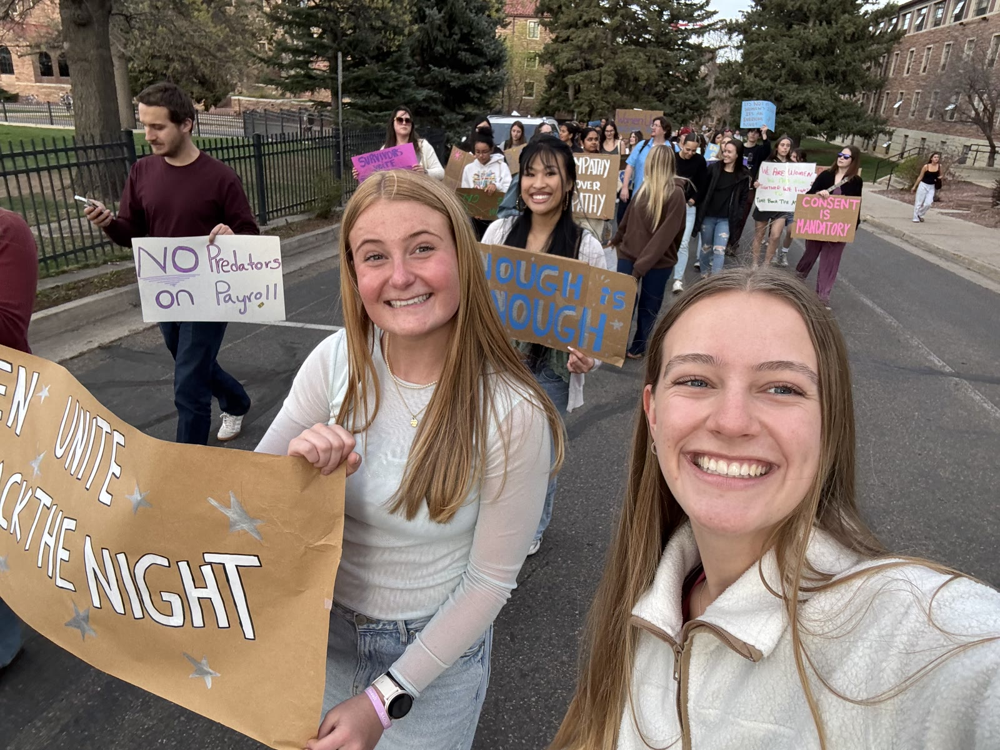
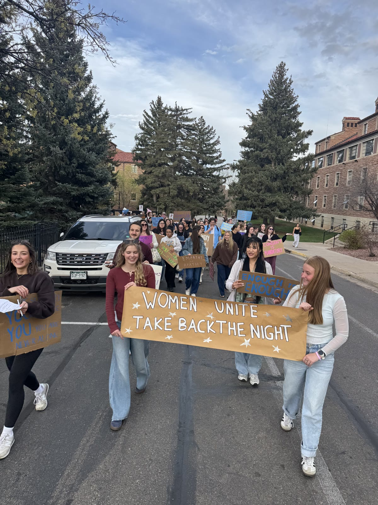
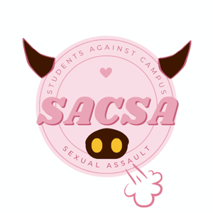
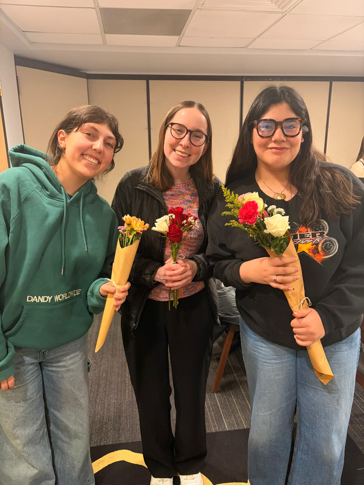
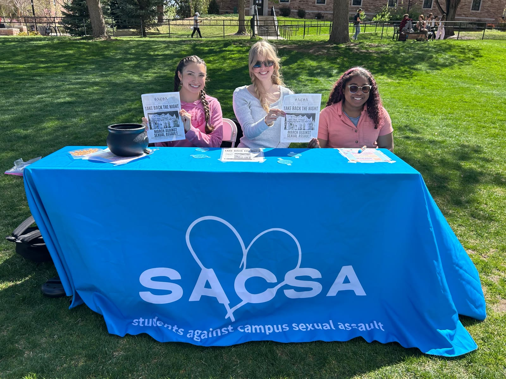
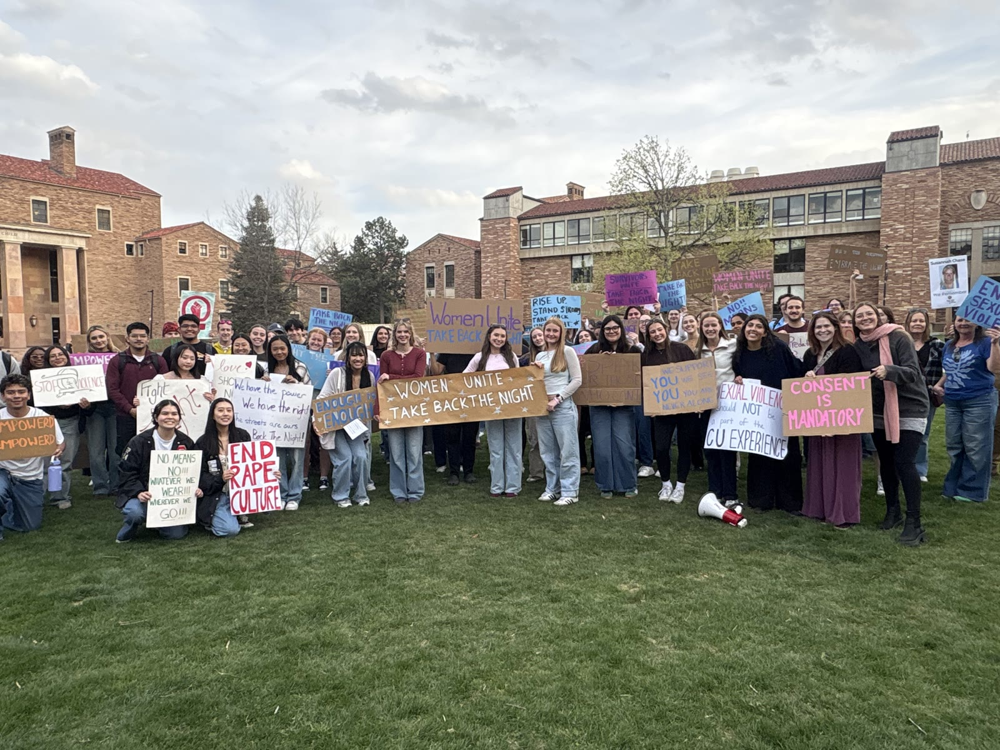

Raise awareness
From the Take Back the Night march to Stop the Spike, we organize events that push the conversation about sexual violence into the open.
See our events →
SACSA is a student-led community for those affected by sexual assault: a space for healing, honest conversation, and action at the University of Colorado Boulder.

Our mission“We founded Students Against Campus Sexual Assault because we felt that there needed to be a direct outlet for students to collaborate with one another in addressing the issues of sexual violence. We are a student-led organization that aims to foster a community for those affected by sexual assault, and we strive to provide a space for healing and productive conversations among survivors and others who are motivated to learn more about this issue.”
The founders of SACSA
We are students dedicated to this cause in one way or another, and our goal is to be there for those who need it.

From the Take Back the Night march to Stop the Spike, we organize events that push the conversation about sexual violence into the open.
See our events →
Calm, low-pressure gatherings with crafts, movies, and conversation, where you can relax in a safe space and speak freely without fear of judgement.
Peek inside →
We help students find the campus and community support that fits their situation, from confidential help to reporting options and crisis lines.
Find support →
Every April, we join a nationally recognized college tradition: students march together to raise awareness of sexual assault on college campuses and to stand against domestic violence, trafficking, and gender-based harassment, on campus and off.
It is loud, moving, and open to everyone. Bring a sign, bring a friend, or just bring yourself.
Explore all eventsWhether you want to organize, volunteer, or simply be part of a supportive community, there is a place for you in SACSA. No experience needed, just care.